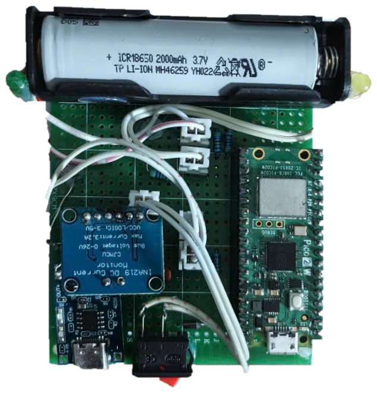

v2 · LatestPico 2 WBTstackC/C++Python
Multi-hop BLE Sensor Network on Raspberry Pi Pico 2 W
Four-board BLE network where sensor nodes reach the Root over up to three hops. Every packet is acknowledged end-to-end, and nodes find a new route on their own when a link or parent disappears.
99.98%delivery
+50 msper hop
~4 sreroute
- End-to-end Root ACK, retransmission with the same packet identity, duplicate filtering
- Self-healing MESH routing with loop prevention; 23 automated experiment runs with fault injection
- Hand-built perfboard node: LDR, INA219 current sensing, 18650 + TP4056, deep-sleep prototype